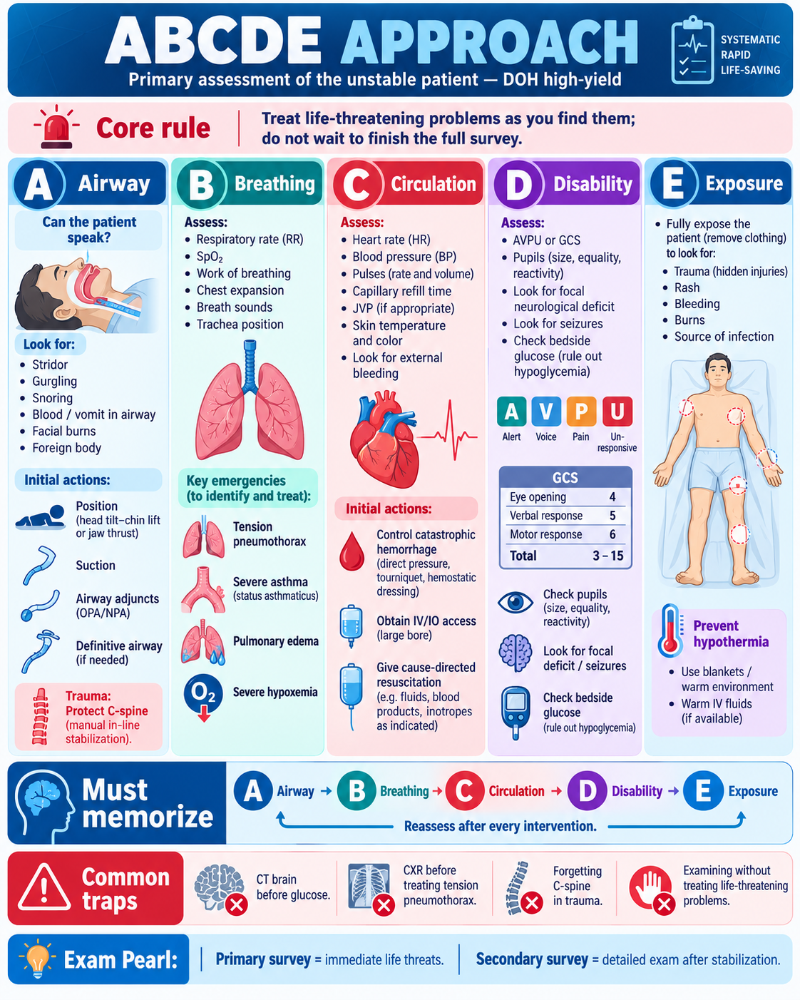
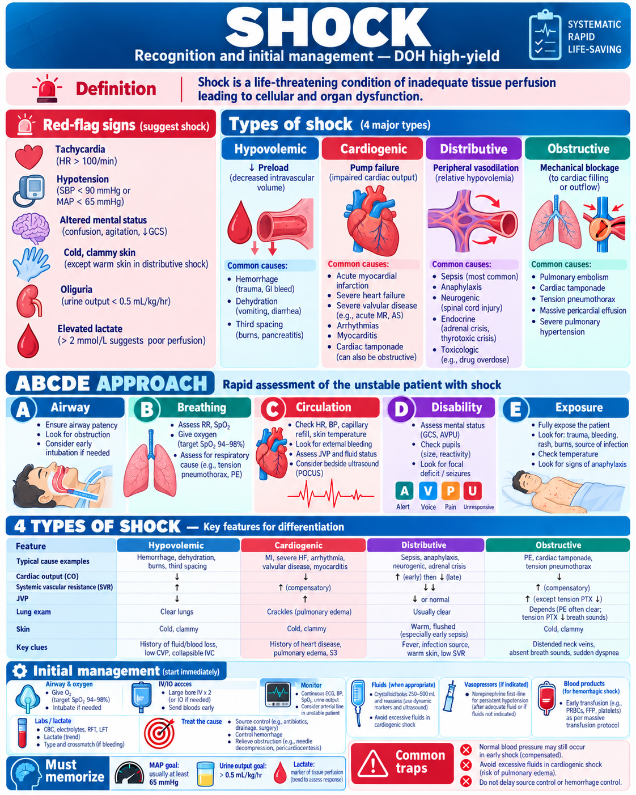
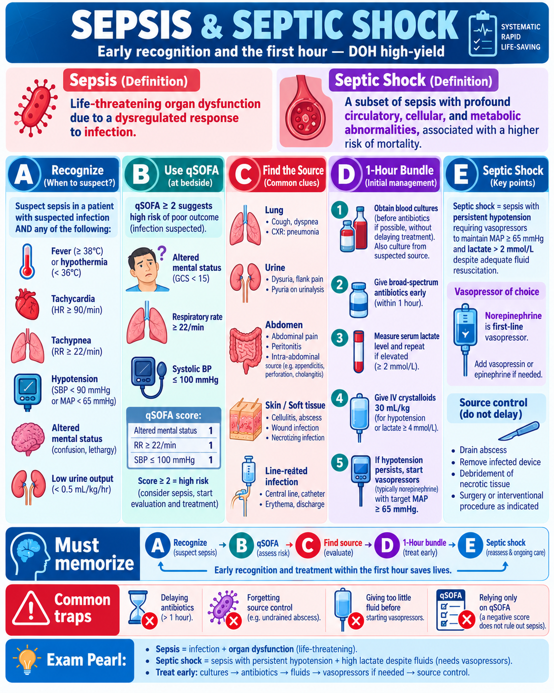
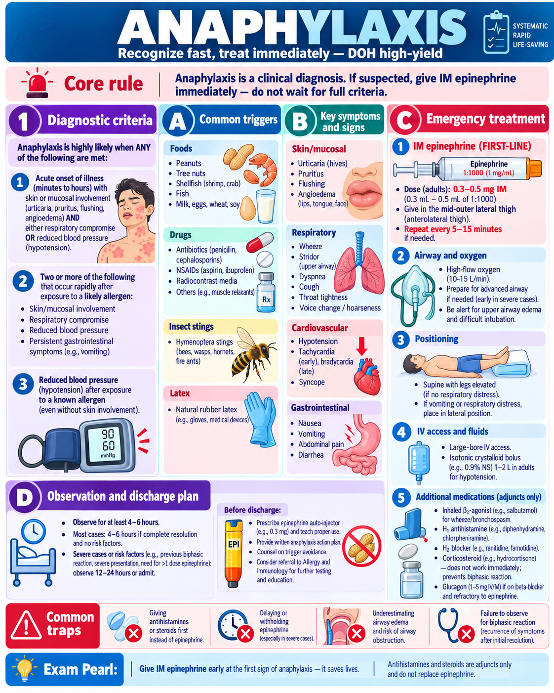
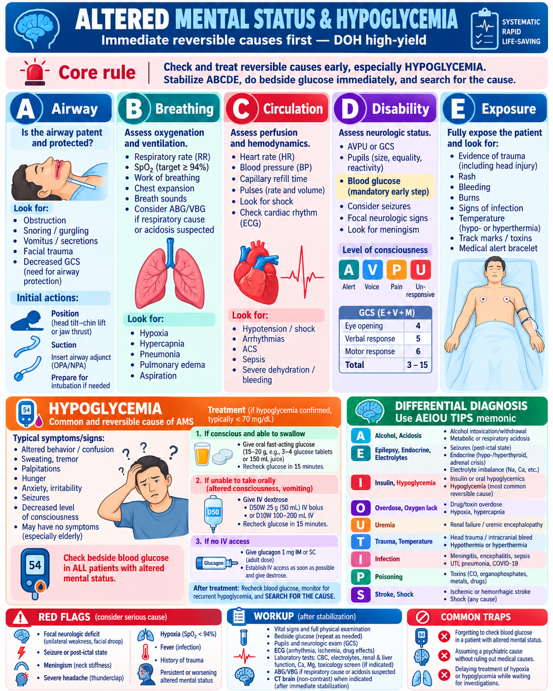
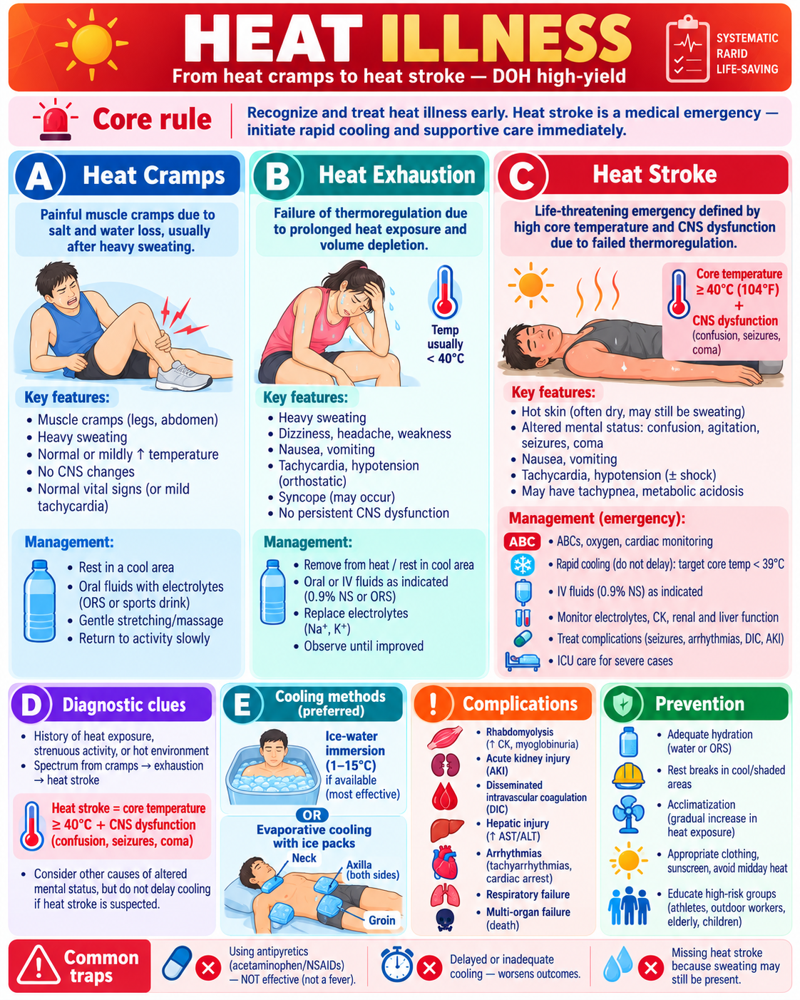
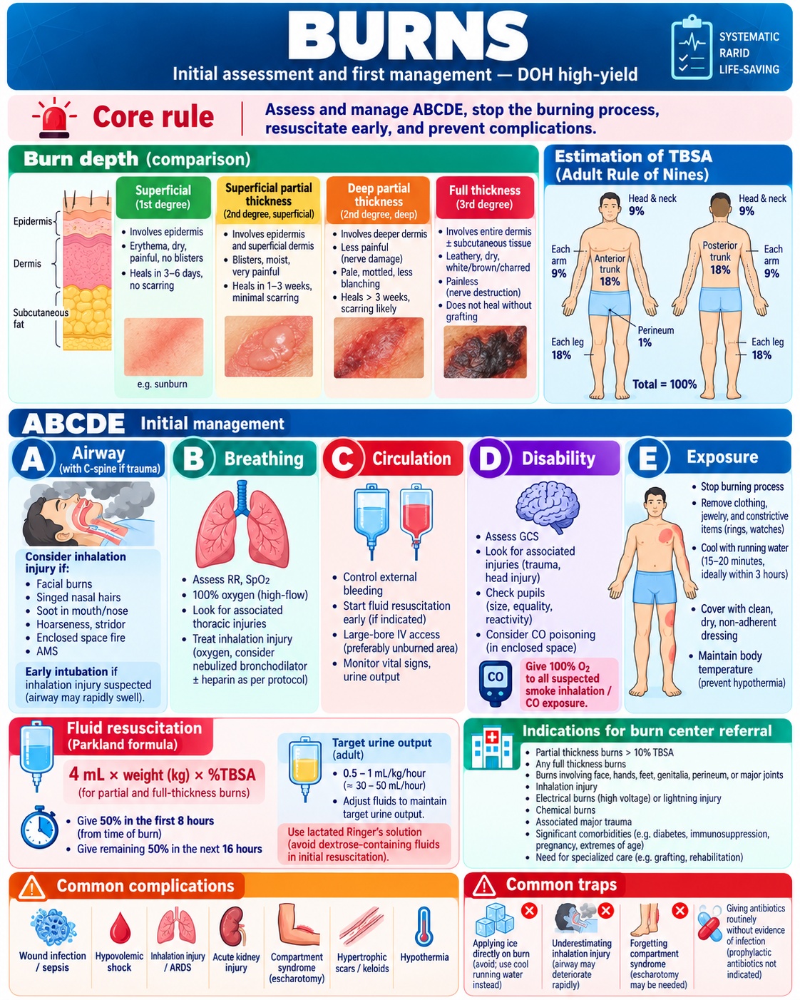
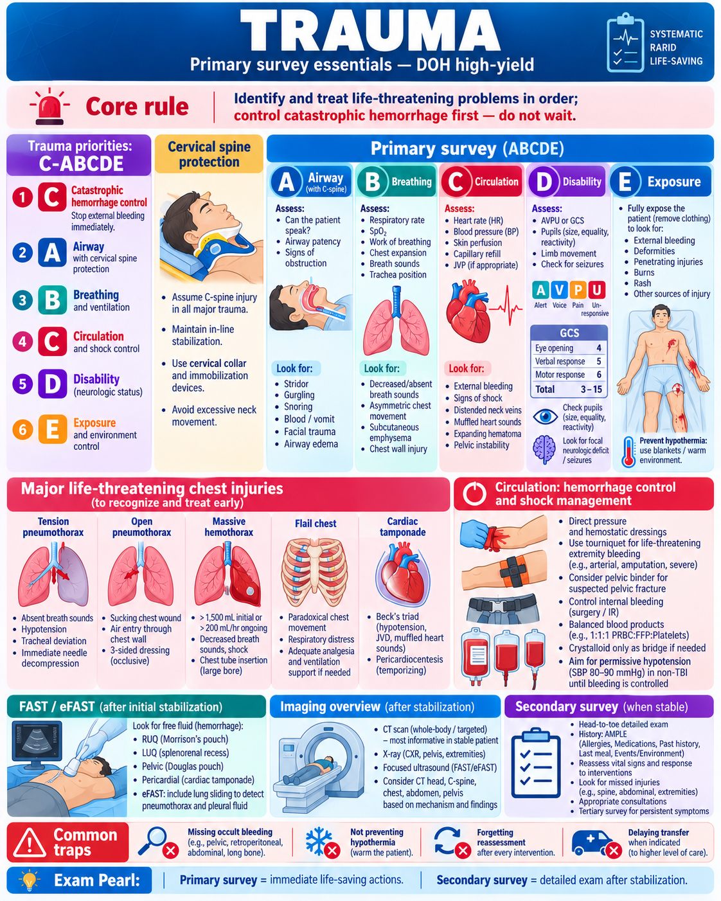

🖼️ Infographics Library
High-yield visual summaries organized by study day. The library stays compact and easy to scan.
Simple gallery: only mini previews are shown here. Click any card to open the full-size infographic in a separate tab, then use your browser Back button or close the tab to return.
Day 1 — Emergency Medicine
Open day notes →
ABCDE ApproachClick to open full size ↗

ShockClick to open full size ↗

Sepsis & Septic ShockClick to open full size ↗

AnaphylaxisClick to open full size ↗

AMS & HypoglycemiaClick to open full size ↗

Heat IllnessClick to open full size ↗

BurnsClick to open full size ↗

TraumaClick to open full size ↗